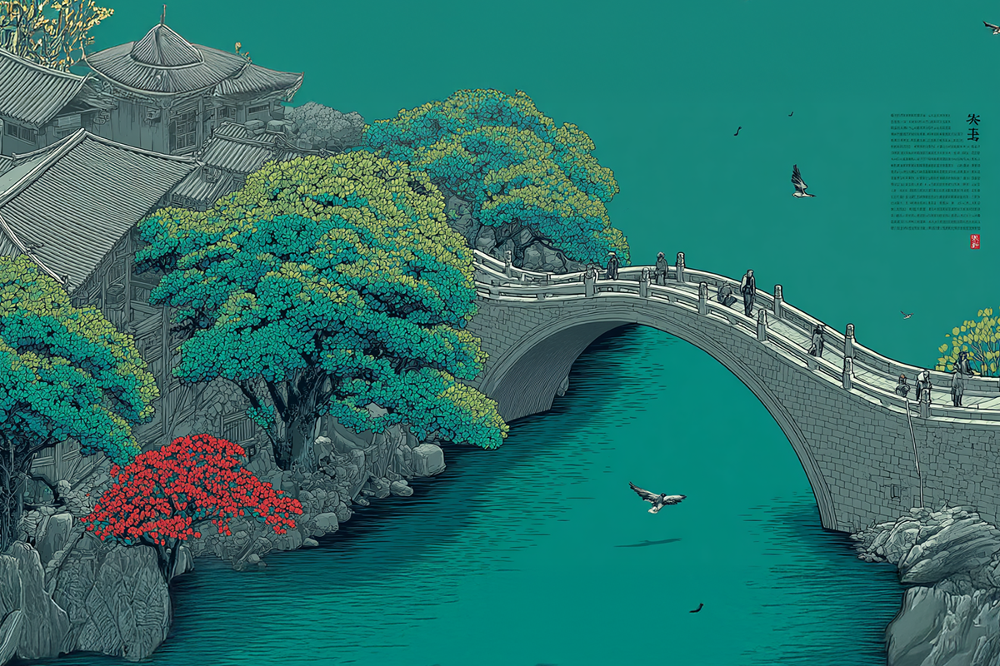
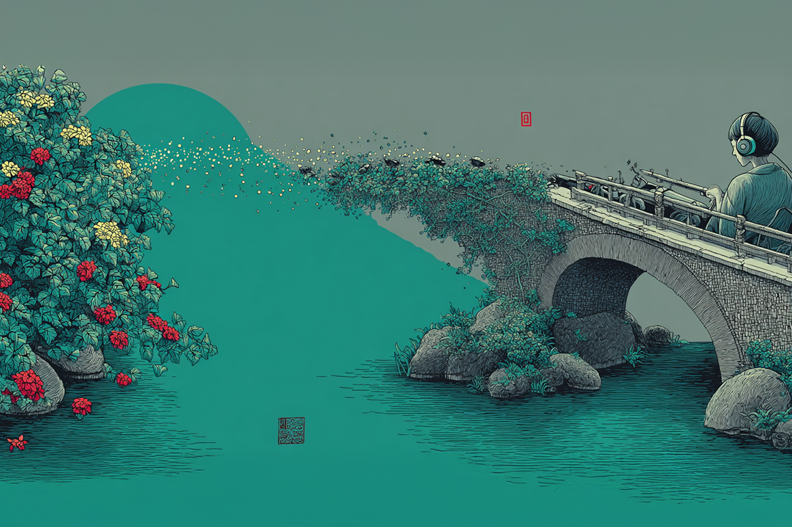
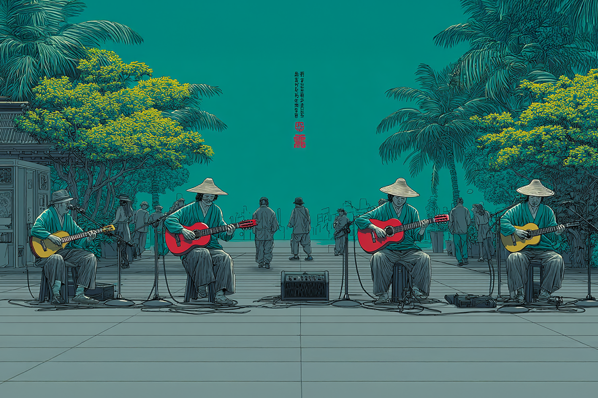
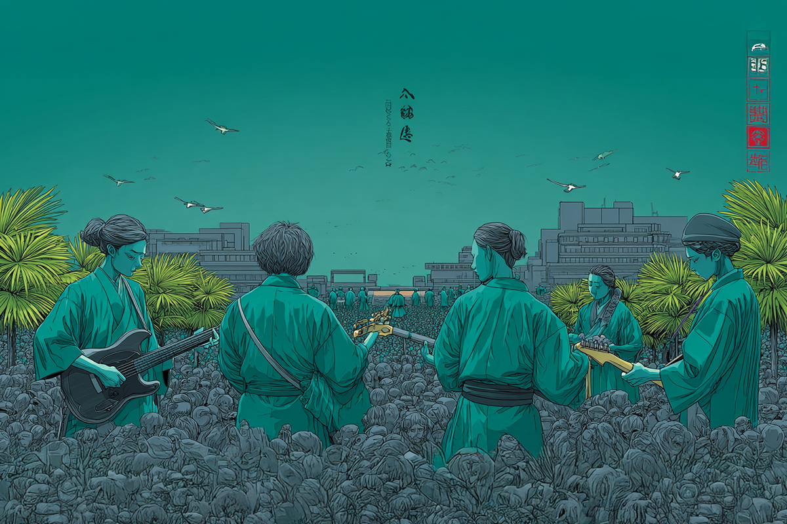
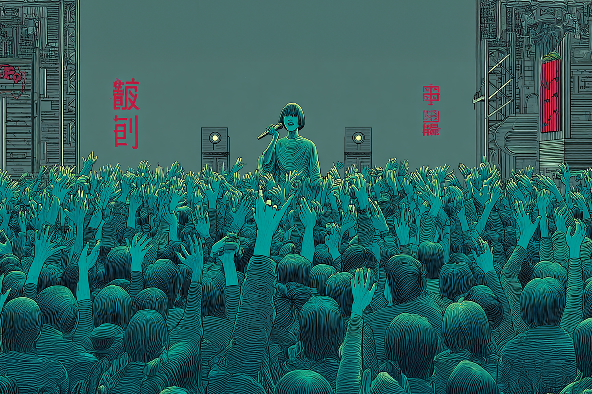

Konichiwa Latinoamérica!
Cuando los artistas japoneses decidieron llegar a Latam
Cuando los artistas japoneses decidieron llegar a Latam

Latinoamérica en un territorio con vasto conocimiento si hablamos de lo que Japón tiene para ofrecer. Y con ello me refiero a una cosa en particular: el animé.
Puedes preguntar a cualquier generación, los Z, los millennials e incluso a los X, y podrán nombrarte al menos un título de alguna animación japonesa. Quizás porque la vieron o quizás porque les suena, pero lo que te puedo asegurar es que todos tienen noción sobre esta vertiente de la cultura japonesa y lo relevante que fue, y sigue siendo, en la vida de muchas personas en Latinoamérica.

Con el animé como caballito de batalla, desde otras veredas culturales comenzaron a guiñarnos el ojo con la música y los cómics, conocidos también como mangas. Aunque en esta pasada nos quedaremos con la música y cómo fue que los artistas nipones comenzaron a hincar el diente en la idiosincrasia musical occidental con una fórmula muy simple, pero radical: las bandas se encerraron a armar las canciones de los openings y los endings de estos animés.
Bajo este contexto es que se vuelve un poco ilógico que las bandas japonesas sean más bien reacias a visitar territorios latinoamericanos, considerando que se da por sentado su absoluto éxito si deciden incorporarnos a sus giras. Aunque, la verdad, debido al éxito que tienen en su país natal, no se volvió una necesidad práctica el abarcar fronteras más allá de Asia.

¿Se acuerdan de que antes los seguidores del animé eran vistos como nerds incomprendidos? Bueno, hace unos años ese sentimiento y prejuicio compartido por años dejó de ser un tema y la animación japonesa pasó de ser el gusto de unos pocos para ser un fenómeno colectivo.
Es que la globalización digital marcó un antes y un después en la percepción de varios gustos que en un principio fueron de nicho, como el k-pop, los k-dramas y el animé, y esto responde a las ansias de encontrar una identidad más allá de la que te ofrece tu territorio, ajustándose más a un contexto globalizado, pero, sobre todo, glocalizado.
Como comenta Matías Alvarado Leyton en el ensayo “Consumo de animé en Latinoamérica: Una historia por contar”, “los individuos seleccionan productos culturales no solo por su valor intrínseco, sino también por lo que éstos representan en términos de estilo de vida y autoimagen. El consumo de anime en la región refleja esta dinámica donde los fans no solo disfrutan del contenido, sino que también lo utilizan para construir y expresar sus identidades, conectándose con una cultura global mientras mantienen sus raíces locales”.

Desde los 2010 que los artistas japoneses salieron de la zona asiática y se encaminaron a descubrir nuevos territorios, unos tan lejanos de casa como lo es Latinoamérica, con un público completamente distinto, con una cultura que dista bastante de la caución nipona y con una sociedad que siempre ha sido catalogada de “apasionada”.
Estos artistas, que veían de lejos la animosidad de sus fans occidentales, se atrevieron a montarse en un viaje de más de 24 horas, muchas veces sin la seguridad de que estos fans serían capaces de llenar capacidades de grandes recintos, menos de estadios, que son los lugares que estos músicos generalmente buscan para desarrollar sus shows en Japón.
Acá se dieron cuenta de algo diferente y, para la mayoría, asombroso: los seguidores son fieles, fanáticos reales, y con un cariño desbordado hacia los artistas de sus amores. La banda japonesa que se va de Latinoamérica, lo hace con el corazón en la mano.

Bandas como Asian Kung-Fu Generation, FLOW, X Japan, y MAN WITH A MISSION se volvieron muy conocidas en el nicho de los amantes de la animación japonesa durante años y se han mantenido vigentes por años debido a esta misma exposición. Ahora, con ellos, nuevos artistas han comenzado a ganar popularidad sirviendo a esta misma fórmula.
Tomando esto en cuenta, y con la globalización y la apertura de miras como focos principales, no son pocos los grupos y artistas que ya han pasado por territorio Latinoamérica y abiertamente han comenzado a agendar fechas por estos lados, a pesar de la lejanía.
Una de las bandas que dio el puntapié inicial a esta escalada de artistas visitantes son los veteranos Tokyo Ska Paradise Orchestra, los que no solo se presentaron con gran éxito, sino que fueron más lejos, colaborando incluso con los argentinos Auténticos Decadentes en dos canciones, “Oro” y “World Rude Connection”.
Con el tiempo, más bandas comenzaron a llegar. En esta lista destacamos a ONE OK ROCK, quienes se han repetido el plato varias veces. La banda de visual kei Jiluka, HYDE de L’Arc en Ciel (quien incluso es rostro para la marca de vino chileno Casillero del Diablo), Asian Kung-Fu Generation, FLOW y más recientemente Radwimps, BABYMETAL y Ado, fenómeno del pop japonés y que la rompió en cada ciudad en la que estuvo con su Hibana Tour, donde hizo sold out en todas sus fechas.

Ahora, los fans están esperando un nuevo show de Hyde y la primera visita de los indie pop LAMP a Sudamérica. Y ojo, que los rumores dicen que Fujii Kaze también haría su primera parada por estos lares junto a Lollapalooza.
Aunque no todo son conciertos, también hemos sido testigos de fanmetings, donde los artistas vienen a compartir de manera más privada con sus fanáticos. Conocido fue el caso del músico Mana Sama Tea Party, una fiesta del té exclusiva, donde los fans pudieron estar cerca del excéntrico ex guitarrista de la banda visual kei Malice Mizer.
Me atrevo a decir que, de acá en más, las productoras latinoamericanas seguirán apostando con traer más variados artistas del país del sol naciente. El mercado está, y los fanáticos, también.
 Cultura
CulturaSé que suena raro hablar de calor extremo mientras en Chile todos están buscando la parka más gruesa del clóset.
 Cultura
CulturaEl hecho de que estemos entrando al mes de julio no se puede creer. Pero lo que tampoco se puede creer es la cantidad de artistas que han…
 Cultura
CulturaCuando hablamos de trabajos clásicos de la música chilena, siempre se nombran los discos de Violeta Parra, Víctor Jara, Los Jaivas o…